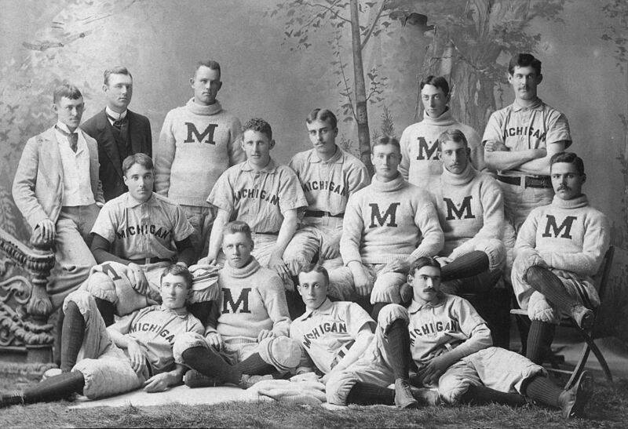
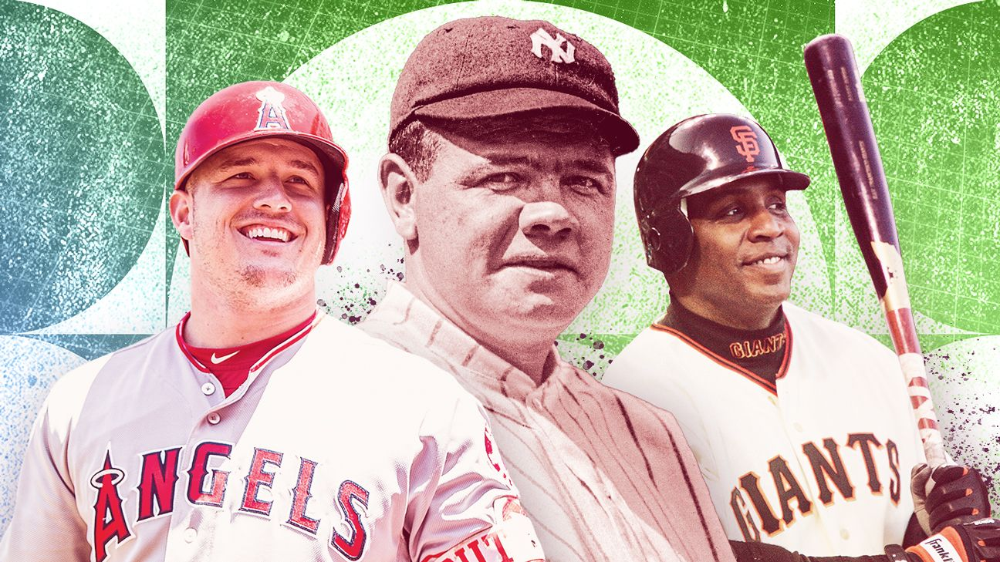

Istorija bejzbola
Bejzbol je jedan od najomiljenijih i najduže trajajućih sportova u Sjedinjenim Američkim Državama, koji se širio širom sveta i stekao veliku popularnost. Ova igra je prepuna bogate istorije i zanimljivih detalja, koji sežu sve do njenih skromnih početaka do današnjeg statusa jednog od najvoljenijih sportova u svetu.
Istorija bejzbola datira još iz 18. veka, iako se prvi zvanični zapis o igri javlja tek u prvim decenijama 19. veka. Razvijao se u Sjedinjenim Američkim Državama, a pravila su se postepeno formirala i menjala tokom vremena. Prema jednoj popularnoj legendi, bejzbol je nastao iz starije igre poznate kao "townball" koja se igrala u nekim gradovima u istočnom delu SAD-a. Međutim, pravog autora bejzbola nije moguće sa sigurnošću odrediti, jer su mnogi gradovi i klubovi razvijali svoje verzije igre i pravila.
Bejzbol je brzo stekao popularnost širom SAD, posebno među vojnicima tokom Američkog građanskog rata (1861-1865). Nakon rata, bejzbol je postao sve popularniji među građanskim stanovništvom, a prve profesionalne lige su osnovane krajem 19. veka, uključujući i Major League Baseball (MLB), koja je osnovana 1876. godine i i dalje je jedna od najprestižnijih i najpoznatijih liga u svetu. Tokom ovog perioda, bejzbol je doživeo brojne promene u pravilima, kao što su uvođenje udarca, nastanak modernih baza, definisanje pozicija igrača, i razvoj taktika igre.
Bejzbol je postao nacionalna zabava u Sjedinjenim Američkim Državama u 19. i ranom 20. veku. Popularnost ovog sporta je rasla, a stadioni su se izgrađivali širom zemlje. Prvi Svetski serijal, serija utakmica između pobednika Nacionalne i Američke lige, odigrana je 1903. godine i postala je jedan od najprestižnijih događaja u svetu bejzbola.
Tokom istorije, bejzbol je bio svedok mnogih ikoničnih trenutaka i ličnosti koje su oblikovale njegovu popularnost. Jedan od najpoznatijih igrača u istoriji bejzbola je Babe Ruth, koji je igrao za Boston Red Sox i New York Yankees u 1920-ima i 1930-ima. Ruth je smatran jednim od najvećih igrača svih vremena, poznat po svojim impresivnim udarcima i rekordima, uključujući i rekord za najviše home runova u jednoj sezoni.
Bejzbol je takođe bio značajan tokom Velike depresije 1930-ih, kada je pružao odušak i nadu Amerikancima usred teških vremena. Tokom godina, brojne ekipe su stvorene, stadioni su izgrađeni, a bejzbol je postao deo američke kulture i identiteta.
Tokom narednih decenija, bejzbol je prolazio kroz brojne promene i evolucije, uključujući razvoj modernih stadiona, promene u pravilima igre i unapređenje tehnologije. Među najpoznatijim igračima u istoriji bejzbola su Babe Ruth, Lou Gehrig, Joe DiMaggio, Jackie Robinson, Willie Mays i mnogi drugi.
Bejzbol je postao važan deo američke sportske kulture, privlačeći ogroman broj gledalaca i fanova širom sveta. Takođe je postao sve više internacionalizovan, s igračima iz različitih delova sveta koji su dolazili da igraju u MLB-u. Bejzbol je i dalje jedan od najpopularnijih i najvoljenijih sportova u Sjedinjenim Američkim Državama i širom sveta, s bogatom istorijom, tradicijom i strastvenom bazaom navijača.